鐘ヶ嶽
| 日付 | 2011年2月27日（日） |
|---|---|
| 山域 | 丹沢 |
| メンバー | グループ（男4女3） |
| 山行形態 | 日帰り |
| アクセス | 電車、バス |
| ルート (Map) | 広沢寺温泉入口→鐘ヶ嶽→広沢寺温泉 |
友人に誘われ、丹沢の鐘ヶ嶽に行くことにする。
丹沢の東にある小さな山で、この山に行くのは3回目だ。
10:04 広沢寺温泉入口バス停到着。標高95m。
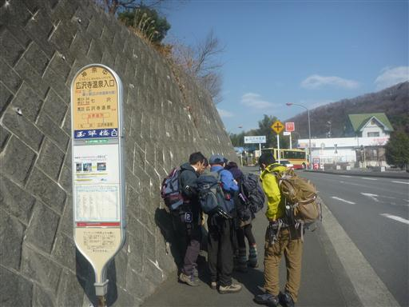
目指す鐘ヶ嶽が目の前に見える。低い山だが、下から見るとなかなか立派だ。
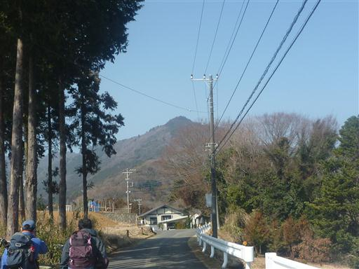
山頂にある神社の鳥居が立っている。
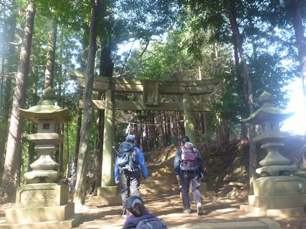
石造もあちらこちらにぽつぽつと置かれている。
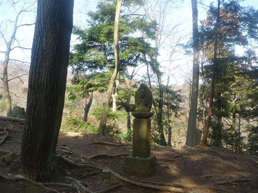
山頂に至る道の半分は急な石段。一気に登るにはなかなか大変だ。
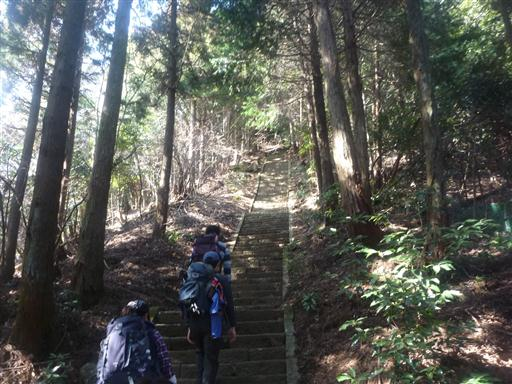
神社の前には白装束を着た人たちがたむろしている。少々近づきがたい雰囲気。
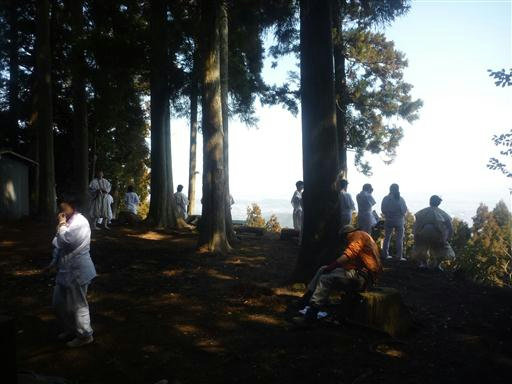
11:32 鐘ヶ嶽山頂到着。標高561m。
残念ながらこの山の山頂からは展望なし。
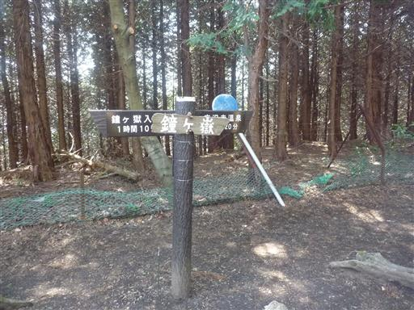
下山道からは平野部の展望が開ける。今日はなかなかの晴天だ。
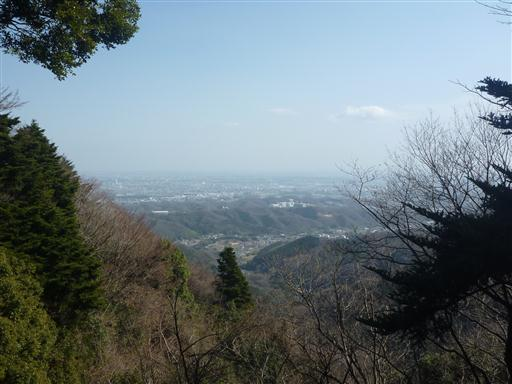
下を見ると、凄まじい量の花粉が飛んでいる。まるで煙のようだ。
歩いていても鼻水とくしゃみが出てくる。花粉の時期は山に近づかない方が無難かもしれない…
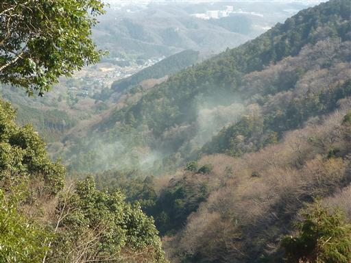
下山。辺りはすっかり春らしい装いだ。
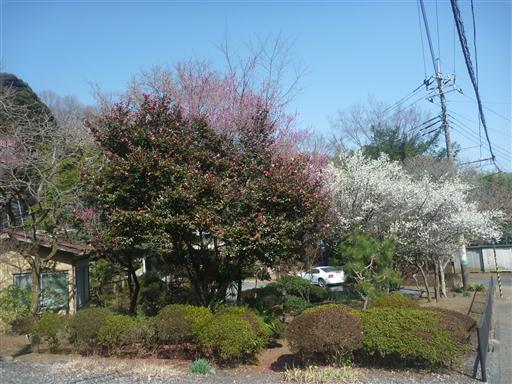
温泉に寄って帰ることにする。
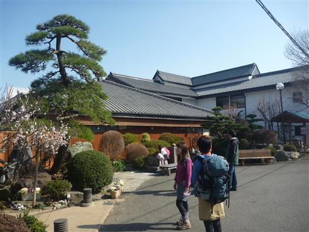
15:11 七沢城跡バス停到着。
ぽかぽか陽気の中ののんびりハイキングだった。
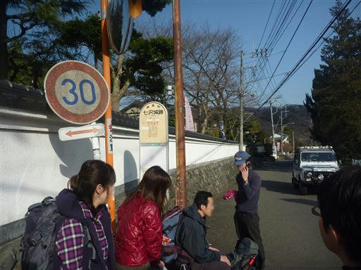
他の山行記録